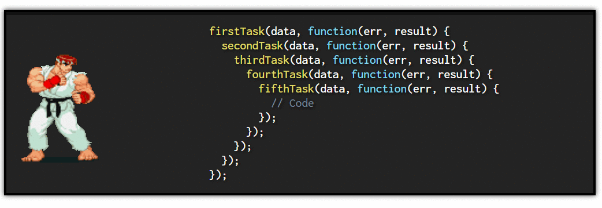
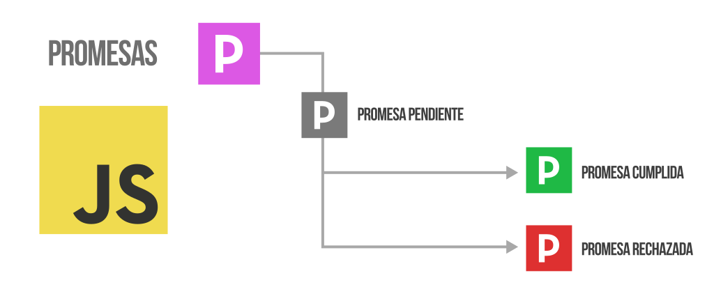

Asincronía¶
¿Qué es la asincronía?¶
La asincronía es uno de los conceptos principales que rige el mundo de Javascript. Cuando comenzamos a programar, normalmente realizamos tareas de forma síncrona, llevando a cabo tareas secuenciales que se ejecutan una detrás de otra, de modo que el orden o flujo del programa es sencillo y fácil de observar en el código:
primera_funcion(); // Tarea 1: Se ejecuta primero
segunda_funcion(); // Tarea 2: Se ejecuta cuando termina primera_funcion()
tercera_funcion(); // Tarea 3: Se ejecuta cuando termina segunda_funcion()
Sin embargo, en el mundo de la programación, tarde o temprano necesitaremos realizar operaciones asíncronas, especialmente en ciertos lenguajes como Javascript, donde tenemos que realizar tareas que tienen que esperar a que ocurra un determinado suceso que no depende de nosotros, y reaccionar realizando otra tarea sólo cuando dicho suceso ocurra.
Lenguaje no bloqueante¶
Cuando hablamos de Javascript, habitualmente nos referimos a él como un lenguaje no bloqueante. Con esto queremos decir que las tareas que realizamos no se quedan bloqueadas esperando ser finalizadas, y por consiguiente, evitando proseguir con el resto de tareas.
Imaginemos que la segunda_funcion() del ejemplo anterior realiza una tarea que depende de otro factor, como por ejemplo un click de ratón del usuario. Si hablasemos de un lenguaje bloqueante, hasta que el usuario no haga click, Javascript no seguiría ejecutando las demás funciones, sino que se quedaría bloqueado esperando a que se terminase esa segunda tarea:

Pero como Javascript es un lenguaje no bloqueante, lo que hará es mover esa tarea a una lista de tareas pendientes a las que irá «prestándole atención» a medida que lo necesite, pudiendo continuar y retomar el resto de tareas a continuación de la segunda.
¿Qué es la asincronía?¶
Pero esto no es todo. Ten en cuenta que pueden existir múltiples tareas asíncronas, dichas tareas puede que terminen realizandose correctamente (o puede que no) y ciertas tareas pueden depender de otras, por lo que deben respetar un cierto orden. Además, es muy habitual que no sepamos previamente cuanto tiempo va a tardar en terminar una tarea, por lo que necesitamos un mecanismo para controlar todos estos factores: las promesas, las cuales veremos algunos capítulos más adelante.
Ejemplos de tareas asíncronas¶
En Javascript no todas las tareas son asíncronas, pero hay ciertas tareas que si lo son, y probablemente se entiendan mejor con ejemplos reales:
- Un
fetch()a una URL para obtener un archivo.json. - Un
new Audio()de una URL con un.mp3al que se hace.play()para reproducirlo. - Una tarea programada con
setTimeout()que se ejecutará en el futuro. - Una comunicación desde Javascript a la API del sintetizador de voz del navegador.
- Una comunicación desde Javascript a la API de un sensor del smartphone.
Todos estos ejemplos se realizan mediante tareas asíncronas, ya que realizan un procedimiento que podría bloquear la ejecución del resto del programa al tardar mucho: la descarga de un fichero grande desde un servidor lento, una conexión a internet muy lenta, un dispositivo saturado a la hora de comunicarse con el sensor del móvil, etc...
¿Cómo gestionar la asincronía?¶
Teniendo en cuenta el punto anterior, debemos aprender a buscar mecanismos para dejar claro en nuestro código Javascript, que ciertas tareas tienen que procesarse de forma asíncrona para quedarse a la espera, y otras deben ejecutarse de forma síncrona.
En Javascript existen varias formas de gestionar la asincronía, donde quizás las más populares son las siguientes (que iremos viendo y profundizando en cada artículo de este tema):
| Método | Descripción |
|---|---|
Mediante callbacks |
Probablemente, la forma más clásica de gestionar la asincronía en Javascript. |
Mediante promesas |
Una forma más moderna y actual de gestionar la asincronía. |
Mediante async/await |
Seguimos con promesas, pero con async/await añadimos más azúcar sintáctico. |
Mediante top-level await |
Una variación de la anterior, donde no es necesario usar async. |
Iremos viendo la implementación de cada una de ellas en cada capítulo de este tema, utilizando de base un ejemplo sencillo donde lanzamos un dado un número concreto de veces, que explicaremos a continuación.
Ejemplo base¶
Tenemos un array numbers, en el cuál insertaremos números. Insertaremos la cantidad de números que figura en iterations. En cada iteración se insertará un number, que habrá sido generado con una simulación del lanzamiento de un dado (un número aleatorio del 1 al 6). En el caso de obtener un 6, paramos y rompemos el bucle:
const iterations = 10;
const numbers = [];
for (let i = 0; i < iterations; i++) {
const number = 1 + Math.floor(Math.random() * 6);
numbers.push(number);
if (number === 6) {
console.log("ERROR");
break;
}
}
console.log(numbers);
Al terminar este fragmento de código, tendremos un array numbers que contendrá todos los números obtenidos en los lanzamientos de los dados, es decir, 10 números si no hemos obtenido ningún 6. Si hemos obtenido un 6 puede que tengamos menos números, debido a que se rompe el bucle tras insertarlo.
Ten en cuenta que este ejemplo es una tarea síncrona (aún no existe asincronía). Simplemente estamos explicando el ejemplo que usaremos de base en los siguientes capítulos del tema para controlar asincronía. Quizás lo ideal sería que cada lanzamiento del lado tardase un tiempo concreto en dar la respuesta, pero no se ha introducido ese retardo para simplificar los ejemplos de código.
Funciones callbacks¶
Los callbacks (a veces denominados funciones de retrollamada o funciones callback) no son más que un tipo de funciones que se pasan por parámetro a otras funciones. El objetivo de esto es tener una forma más legible de escribir funciones, más cómoda y flexible para reutilizarlas, y además entra bastante en consonancia con el concepto de asincronía de Javascript, como veremos más adelante.
Ten en cuenta que actualmente, controlar la asincronía sólo mediante callbacks puede ser una práctica obsoleta. Es preferible utilizar promesas, que generalmente es más adecuado.
¿Qué es un callback?¶
Como hemos dicho, las funciones callback no son más que un tipo de funciones que se pasan por parámetro a otras funciones. Además, los parámetros de dichas funciones toman un valor especial en el contexto del interior de la función.
Pero veamos un ejemplo. Imaginemos el siguiente bucle tradicional para recorrer un :
const list = ["A", "B", "C"];
for (let i = 0; i < list.length; i++) {
console.log("i=", i, " list=", list[i]);
}
En i tenemos la posición del array que estamos recorriendo (va de 0 a 2) y con list[i] accedemos a la posición del array para obtener el elemento, es decir, desde A hasta C. Ahora veamos, como podemos hacer este mismo bucle utilizando el método forEach() del al cuál le pasamos una función callback:
list.forEach(function(e,i) {
console.log("i=", i, "list=", e);
});
Esto se puede reescribir como:
["A", "B", "C"].forEach((e,i) => console.log("i=", i, "list=", e));
Lo importante de este ejemplo es que se vea que la función callback que le hemos pasando a forEach() se va a ejecutar por cada uno de los elementos del array, y en cada iteración de dicha función callback, los parámetros e, i van a tener un valor especial:
ees el elemento del arrayies el índice (posición) del array
Callbacks en Javascript¶
Una vez entendido esto, vamos a profundizar un poco con las funciones callbacks utilizadas para realizar tareas asíncronas. Probablemente, el caso más fácil de entender es utilizar un temporizador mediante la función setTimeout(``callback, time).
Dicha función nos exige dos parámetros:
- La función
callbacka ejecutar - El tiempo
timeque esperará antes de ejecutarla
Así pues, el ejemplo sería el siguiente:
setTimeout(function() {
console.log("He ejecutado la función");
}, 2000);
Simplemente, le decimos a setTimeout() que ejecute la función callback que le hemos pasado por primer parámetro cuando transcurran 2000 milisegundos (es decir, 2 segundos). Utilizando arrow functions se puede simplificar el callback y hacer mucho más «fancy» y legible:
setTimeout(() => console.log("He ejecutado la función"), 2000);
Si lo prefieres y lo ves más claro (no suele ser habitual en código Javascript, pero cuando se empieza suele resultar más fácil entenderlo) podemos guardar el callback en una constante:
const action = () => console.log("He ejecutado la función");
setTimeout(action, 2000);
En cualquiera de los casos, lo importante es darse cuenta que estamos usando una función callback para pasársela a setTimeout(), que es otra función. En este caso, se trata de «programar» un suceso que ocurrirá en un momento conocido del futuro, pero muchas veces desconoceremos cuando se producirá (o incluso si se llegará a producir).
Si probamos el código que verás a continuación, comprobarás que el segundo console.log() se ejecutará antes que el primero, dentro del setTimeout(), mostrando primero Código síncrono y luego Código asíncrono en la consola del navegador:
setTimeout(() => console.log("Código asíncrono."), 2000);
console.log("Código síncrono.");
El último console.log del código se ejecuta primero (forma parte del flujo principal de ejecución del programa). El setTimeout() que figura en una línea anterior, aunque se ejecuta antes, pone en espera a la función callback, que se ejecutará cuando se cumpla una cierta condición (transcurran 2 segundos desde ese momento).
Esto puede llegar a sorprender a desarrolladores que llegan de otros lenguajes considerados bloqueantes; Javascript sin embargo se considera un lenguaje asíncrono y no bloqueante. ¿Qué significa esto? Al ejecutar la línea del
setTimeout(), el programa no se queda bloqueado esperando a que terminen los 2 segundos y se ejecute la función callback, sino que continúa con el flujo general del programa para volver más adelante cuando sea necesario a ejecutar elcallback, aprovechando así mejor el tiempo y realizando tareas de forma asíncrona.
Asincronía con callbacks¶
Las funciones callback pueden utilizarse como un primer intento de manejar la asincronía en un programa. De hecho, eran muy utilizadas en la época dorada de jQuery, donde muchas funciones o librerías tenían una estructura similar a esta (en jQuery se usaba algo similar):
function doTask(number, callback) {
/* Código de la función */
}
doTask(42, function(err, result) {
/* Trabajamos con err o result según nos interese */
});
Observa que doTask() es la función que realiza la tarea en cuestión. Puede tener los parámetros que se consideren adecuados, como cualquier otra función, la diferencia es que establecemos un callback que usaremos para controlar lo que se debe hacer.
Más adelante, llamamos a la función doTask() y en su parámetro callback pasamos una función con dos parámetros; err y result. El primero de ellos, err, utilizado para controlar un error y el segundo de ellos, result, utilizado para manejar los valores devueltos.
Vamos a utilizar el ejemplo del lanzamiento de 10 dados que explicamos en el primer capítulo de Asincronía, para adaptarlo a funciones callbacks. En primer lugar, veamos la implementación de la función doTask:
/* Implementación con callbacks */
const doTask = (iterations, callback) => {
const numbers = [];
for (let i = 0; i < iterations; i++) {
const number = 1 + Math.floor(Math.random() * 6);
numbers.push(number);
if (number === 6) {
/* Error, se ha sacado un 6 */
callback({
error: true,
message: "Se ha sacado un 6"
});
return;
}
}
/* Termina bucle y no se ha sacado 6 */
return callback(null, {
error: false,
value: numbers
});
}
Como se puede ver, estamos utilizando arrow functions para definir la función doTask(). Le pasamos un parámetro iterations que simplemente indica el número de iteraciones que tendrá el bucle (número de lanzamientos del dado). Por otro lado, el segundo parámetro es nuestro callback, que recordemos que es una función, por lo que podremos ejecutarla en momentos concretos de nuestro código. Lo hacemos en dos ocasiones:
-
En el
ifcuandonumberes6(detectamos como error cuando obtenemos un 6). Le pasamos un objeto por parámetro que contiene unerrorymessage, el mensaje de error. -
Tras el
for, con dos parámetros. El primero , ya que en este caso no hay error. El segundo parámetro un objeto que contiene un campovaluecon el array de resultados.
Teniendo claro esto, veamos la llamada a la función doTask(), donde le pasamos esa función callback e implementamos el funcionamiento, que en nuestro caso serán dos simples console.error() y console.log():
doTask(10, function(err, result) {
if (err) {
console.error("Se ha sacado un ", err.message);
return;
}
console.log("Tiradas correctas: ", result.value);
});
Esto es una forma clásica donde utilizamos una función callback para gestionar la asincronia y facilitar la reutilización, pudiendo reutilizar la función con la lógica, aplicando diferentes funciones callback según nos interese.
Observa que aunque en este ejemplo se ha utilizado un parámetro
erry otroresulten el callback para gestionar un objeto de error y un objeto de resultados, esto puede modificarse a gusto del desarrollador, aunque lo habitual suele ser este esquema.
Desventajas de los callbacks¶
A pesar de ser una forma flexible y potente de controlar la asincronía, que permite realizar múltiples posibilidades, las funciones callbacks tienen ciertas desventajas evidentes. En primer lugar, el código creado con las funciones es algo caótico y (quizás subjetivamente) algo feo. Por ejemplo, el tener que pasar un por parámetros en algunas funciones, no es demasiado elegante.
Pero sobre todo, uno de los problemas evidentes viene a la hora de tener que gestionar la asincronía varias veces en una misma función, donde al introducir varias funciones con callbacks en su interior, conseguimos una estructura anidada similar a la siguiente:

La forma triangular que produce es conocida como Callback Hell o Pyramid of Doom, debido a su forma, resultando un código muy poco elegante que se puede complicar demasiado de cara a la legibilidad. Es cuando entran en juego las promesas, que veremos en el siguiente capítulo.
¿Qué son las promesas?¶
Las promesas son un concepto para resolver el problema de asincronía de una forma mucho más elegante y práctica que, por ejemplo, utilizando funciones callbacks directamente.
Como su propio nombre indica, una promesa es algo que, en principio pensamos que se cumplirá, pero en el futuro pueden ocurrir varias cosas:

- La promesa se cumple (promesa resuelta)
- La promesa no se cumple (promesa se rechaza)
- La promesa se queda en un estado incierto indefinidamente (promesa pendiente)
Con estas sencillas bases, podemos entender el funcionamiento de una promesa en Javascript. Antes de empezar, también debemos tener claro que existen dos partes importantes de las promesas: como consumirlas (utilizar promesas) y como crearlas (preparar una función para que use promesas y se puedan consumir).
Promesas en Javascript¶
Las promesas en Javascript se representan a través de un , y cada promesa estará en un estado concreto: pendiente, aceptada o rechazada. Además, cada promesa tiene los siguientes métodos, que podremos utilizar para utilizarla:
| Métodos | Descripción |
|---|---|
.then(``resolve) |
Ejecuta la función callback resolve cuando la promesa se cumple. |
.catch(``reject) |
Ejecuta la función callback reject cuando la promesa se rechaza. |
.then(``resolve,``reject) |
Método equivalente a las dos anteriores en el mismo .then(). |
.finally(``end) |
Ejecuta la función callback end tanto si se cumple como si se rechaza. |
Más adelante veremos, que a diferencia del apartado anterior donde se utilizaban solamente funciones callback, en este enfoque se tiende a no anidar promesas, evitando así el famoso Callback Hell, y haciendo el código mucho más legible.
Consumir una promesa¶
La forma general de consumir una promesa es utilizando el .then() con un sólo parámetro, puesto que muchas veces lo único que nos interesa es realizar una acción cuando la promesa se cumpla:
fetch("/robots.txt").then(function(response) {
/* Código a realizar cuando se cumpla la promesa */
});
Lo que vemos en el ejemplo anterior es el uso de la función fetch(), la cuál devuelve una promesa que se cumple cuando obtiene respuesta de la petición realizada. De esta forma, estaríamos preparando (de una forma legible) la forma de actuar de nuestro código a la respuesta de la petición realizada, todo ello de forma asíncrona.
Recuerda que podemos hacer uso del método .catch() para actuar cuando se rechaza una promesa:
fetch("/robots.txt")
.then(function(response) {
/* Código a realizar cuando se cumpla la promesa */
})
.catch(function(error) {
/* Código a realizar cuando se rechaza la promesa */
});
Observa como hemos indentado los métodos .then() y .catch(), ya que se suele hacer así para que sea mucho más legible para el. Además, se pueden encadenar varios .then() si se siguen generando promesas y se devuelven con un return:
fetch("/robots.txt")
.then(response => {
return response.text(); // Devuelve una promesa
})
.then(data => {
console.log(data);
})
.catch(error => { /* Código a realizar cuando se rechaza la promesa */ });
No olvides indicar el
returnpara poder encadenar las siguientes promesas con.then(). Tras un.catch()también es posible encadenar.then()para continuar procesando promesas.
De hecho, usando arrow functions se puede mejorar aún más la legibilidad de este código, recordando que cuando sólo tenemos una sentencia en el cuerpo de la arrow function hay un return implícito:
fetch("/robots.txt")
.then(response => response.text())
.then(data => console.log(data))
.finally(() => console.log("Terminado."))
.catch(error => console.error(data));
Observese además que hemos añadido el método .finally() para añadir una función callback que se ejecutará tanto si la promesa se cumple o se rechaza, lo que nos ahorrará tener que repetir la función en el .then() como en el .catch().
En todo este apartado hemos visto como utilizar o consumir una promesa haciendo uso de
.then(), que es lo que en la mayoría de los casos necesitaremos. Sin embargo, vamos a ver en el siguiente apartado como crear o implementar las promesas para su posterior consumo.
Asincronía con promesas¶
Vamos a implementar el ejercicio base que hemos comentado en el primer capítulo de este tema utilizando promesas. Observa que lo primero que haremos es crear un nuevo objeto que «envuelve» toda la función de la tarea doTask().
Al new Promise() se le pasa por parámetro una función con dos callbacks, el primero resolve el que utilizaremos cuando se cumpla la promesa, y el segundo reject cuando se rechace:
/* Implementación con promesas */
const doTask = (iterations) => new Promise((resolve, reject) => {
const numbers = [];
for (let i = 0; i < iterations; i++) {
const number = 1 + Math.floor(Math.random() * 6);
numbers.push(number);
if (number === 6) {
reject({
error: true,
message: "Se ha sacado un 6"
});
}
}
resolve({
error: false,
value: numbers
});
});
Como ves, se trata de una implementación muy similar a los callbacks que vimos en el apartado anterior, pero utilizan una nativa para poder luego consumirla cómodamente:
doTask(10)
.then(result => console.log("Tiradas correctas: ", result.value))
.catch(err => console.error("Se ha sacado un ", err.message));
Imagina el caso de que cada lanzamiento del dado (la parte donde genera el número aleatorio) fuera un proceso más costoso que tardara un tiempo considerable, quizás de esa forma se vea más clara la necesidad de una tarea asíncrona, controlada con promesas.
En el siguiente capítulo veremos como trabajar con múltiples promesas y hacer acciones compuestas con varias de ellas.
Si el ejemplo anterior te resulta demasiado críptico por las funciones
resolveyreject, es muy probable que echar un vistazo al tema de las funciones callback te aclare muchos detalles.
Promesas en grupo (Promise API)¶
Ahora que sabemos ¿Qué son las promesas?, para qué y como se usan, podemos profundizar y aprender más sobre la API Promise nativa de Javascript, mediante la cuál podemos realizar operaciones con grupos de promesas, tanto independientes como dependientes entre sí.
Por norma general, las tareas asíncronas no sabemos cuanto tardarán en responder y/o procesarse, por lo que muchas veces el orden en que se resuelvan no será el mismo. Esto en algunos casos no nos importará, pero en otros sí, por lo que hay que tenerlo en cuenta.
API de las promesas¶
El objeto Promise de Javascript tiene varios métodos estáticos que podemos utilizar en nuestro código. Todos devuelven una promesa y son los que veremos en la siguiente tabla:
| Métodos | Descripción |
|---|---|
Promise.all(``list) |
Acepta sólo si todas las promesas del se cumplen. |
Promise.allSettled(``list) |
Acepta sólo si todas las promesas del se cumplen o rechazan. |
Promise.any(``list) |
Acepta con el valor de la primera promesa del que se cumpla. |
Promise.race(``list) |
Acepta o rechaza dependiendo de la primera promesa que se procese. |
Promise.resolve(``value) |
Devuelve un valor envuelto en una promesa que se cumple directamente. |
Promise.reject(``value) |
Devuelve un valor envuelto en una promesa que se rechaza directamente. |
En los siguientes ejemplos, vamos a utilizar la función fetch() para realizar varias peticiones y descargar varios archivos diferentes que necesitaremos para nuestras tareas.
Promise.all()¶
El método Promises.all() funciona como un «todo o nada»: devuelve una promesa que se cumple cuando todas las promesas del se cumplen. Si alguna de ellas se rechaza, Promise.all() también lo hace.
En nuestro ejemplo, cada uno de los fetch() tendrá su propia promesa y sólo cuando se hayan descargado los tres archivos de cada petición se cumplirá la promesa del Promise.all():
const p1 = fetch("/robots.txt");
const p2 = fetch("/index.css");
const p3 = fetch("/index.js");
Promise.all([p1, p2, p3])
.then(responses => {
responses.forEach(response => {
console.log(response.status, response.url);
})
});
A Promise.all() le pasamos un con las promesas individuales. Cuando todas y cada una de esas promesas se cumplan favorablemente, entonces se ejecutará la función callback de su .then(). En el caso de que alguna se rechace, no se llegará a ejecutar.
Promise.allSettled()¶
El método Promises.allSettled() funciona como un «todas procesadas»: devuelve una promesa que se cumple cuando todas las promesas del se hayan procesado, independientemente de que se hayan cumplido o rechazado.
const p1 = fetch("/robots.txt");
const p2 = fetch("https://google.com/index.css");
const p3 = fetch("/index.js");
Promise.allSettled([p1, p2, p3])
.then(responses => {
responses.forEach(response => {
console.log(response.status, response);
})
});
Esta promesa nos devuelve un campo status donde nos indica si cada promesa individual ha sido cumplida o rechazada, y un campo value con los valores devueltos por la promesa. En este caso, obtendremos que la primera y última promesa se resuelven (fulfilled), mientras que la segunda nos da un error de CORS y se rechaza (rejected).
Promise.any()¶
El método Promise.any() funciona como «la primera que se cumpla»: Devuelve una promesa con el valor de la primera promesa individual del que se cumpla. Si todas las promesas se rechazan, entonces devuelve una promesa rechazada.
const p1 = fetch("/robots.txt");
const p2 = fetch("/index.css");
const p3 = fetch("/index.js");
Promise.any([p1, p2, p3])
.then(response => console.log(response.status, response.url));
Como vemos, Promise.any() devolverá una respuesta de la primera promesa cumplida.
Promise.race()¶
El método Promise.race() funciona como una «la primera que se procese»: la primera promesa del que sea procesada, independientemente de que se haya cumplido o rechazado, determinará la devolución de la promesa del Promise.race(). Si se cumple, devuelve una promesa cumplida, en caso negativo, devuelve una rechazada.
const p1 = fetch("/robots.txt");
const p2 = fetch("/index.css");
const p3 = fetch("/index.js");
Promise.race([p1, p2, p3])
.then(response => console.log(response.status, response.url));
De forma muy similar a la anterior, Promise.race() devolverá la promesa que se resuelva primero, ya sea cumpliéndose o rechazándose.
Promise.resolve() y Promise.reject()¶
Mediante los métodos estáticos Promise.resolve() y Promise.reject() podemos devolver una promesa cumplida o rechazada respectivamente sin necesidad de crear una promesa con new Promise(). Esto puede ser interesante en algunos casos, aunque rara vez solemos utilizarlo hoy en día.
const doTask = () => {
const number = 1 + Math.floor(Math.random() * 6);
return (number % 2 === 0) ? Promise.resolve(number) : Promise.reject(number);
}
Observa que en este caso devolvemos una promesa que se cumple cuando el número generado es par y se rechaza cuando es impar. Sin embargo, ten en cuenta que en problema en este caso es que la promesa no «envuelve» toda la función, por lo que si la tarea tardase algún tiempo en generar el número, no podríamos utilizar el .then() para consumir la promesa.
Estas funciones estáticas se suelen utilizar en muy pocos casos, para mantener cierta compatibilidad en funciones que se espera que devuelvan una promesa.
Async/Await¶
En se introducen las palabras clave async/await, que no son más que una forma de azúcar sintáctico para gestionar las promesas de una forma más sencilla. Con async/await seguimos utilizando promesas, pero abandonamos el modelo de encadenamiento de .then() para utilizar uno en el que trabajamos de forma más tradicional.
La palabra clave async¶
En primer lugar, tenemos la palabra clave async. Esta palabra clave se colocará previamente a function, para definirla así como una función asíncrona, el resto de la función no cambia:
async function funcion_asincrona() {
return 42;
}
En el caso de que utilicemos arrow function, se definiría como vemos a continuación, colocando el async justo antes de los parámetros de la arrow function:
const funcion_asincrona = async () => 42;
Al ejecutar la función veremos que ya nos devuelve una que ha sido cumplida, con el valor devuelto en la función (en este caso, 42). De hecho, podríamos utilizar un .then() para manejar la promesa:
funcion_asincrona().then(value => {
console.log("El resultado devuelto es: ", value);
});
Sin embargo, veremos que lo que se suele hacer junto a async es utilizar la palabra clave await, que es donde reside lo interesante de utilizar este enfoque.
La palabra clave await¶
Cualquier función definida con async, o lo que es lo mismo, cualquier puede utilizarse junto a la palabra clave await para manejarla. Lo que hace await es esperar a que se resuelva la promesa, mientras permite continuar ejecutando otras tareas que puedan realizarse:
const funcion_asincrona = async () => 42;
const value = funcion_asincrona(); // Promise { <fulfilled>: 42 }
const asyncValue = await funcion_asincrona(); // 42
Observa que en el caso de value, que se ejecuta sin await, lo que obtenemos es el valor devuelto por la función, pero «envuelto» en una promesa que deberá utilizarse con .then() para manejarse. Sin embargo, en asyncValue estamos obteniendo un tipo de dato , guardando el valor directamente ya procesado, ya que await espera a que se resuelva la promesa de forma asíncrona y guarda el valor.
Esto hace que la forma de trabajar con
async/await, aunque se sigue trabajando exactamente igual con promesas, sea mucho más fácil y trivial para usuarios que no estén acostumbrados a las promesas y a la asincronía en general, ya que el código «parece» síncrono.
Asincronía con async/await¶
Volvamos al ejemplo que hemos visto en los anteriores capítulos. Recordemos que la función doTask() realiza 10 lanzamientos de un dado y nos devuelve los resultados obtenidos o detiene la tarea si se obtiene un 6.
La implementación de la función sufre algunos cambios, simplificándose considerablemente. En primer lugar, añadimos la palabra clave async antes de los parámetros de la arrow function. En segundo lugar, desaparece cualquier mención a promesas, se devuelven directamente los objetos, ya que al ser una función async se devolverá todo envuelto en una :
const doTask = async (iterations) => {
const numbers = [];
for (let i = 0; i < iterations; i++) {
const number = 1 + Math.floor(Math.random() * 6);
numbers.push(number);
if (number === 6) {
return {
error: true,
message: "Se ha sacado un 6"
};
}
}
return {
error: false,
value: numbers
};
}
Pero donde se introducen cambios considerables es a la hora de consumir las promesas con async/await. No tendríamos que utilizar .then(), sino que podemos simplemente utilizar await para esperar la resolución de la promesa, obteniendo el valor directamente:
const resultado = await doTask(10); // Devuelve un objeto, no una promesa
Recuerda que en el caso de querer controlar errores o promesas rechazadas, siempre podrás utilizar bloques
try/catch.
Top-level await¶
En principio, el comportamiento de await solo permite que se utilice en el interior de funciones declaradas como async. Por lo que, si el ejemplo anterior lo ejecutamos en una consola de Javascript, funcionará correctamente (estamos escribiendo comandos de forma asíncrona), pero si lo escribimos en un fichero, probablemente nos aparecerá el siguiente error:
Uncaught SyntaxError:
awaitis only valid inasyncfunction
Esto ocurre porque, como bien dice el mensaje de error, estamos ejecutando await en el contexto global de la aplicación, y debemos ejecutarlo en un contexto de función asíncrona. Para corregirlo, podemos añadir un <button> en el HTML y modificar la linea anterior del await:
document.querySelector("button").addEventListener("click", async () => {
const resultado = await doTask(10);
console.log(resultado);
});
Una nueva propuesta denominada top-level await permite utilizar await fuera de funciones async, por lo que es muy probable que en poco tiempo comencemos a utilizarla sin tener que incluir el async en las funciones. Sin embargo, sólo funcionará en determinados contextos.
Fuente: Lenguaje Javascript por Manz